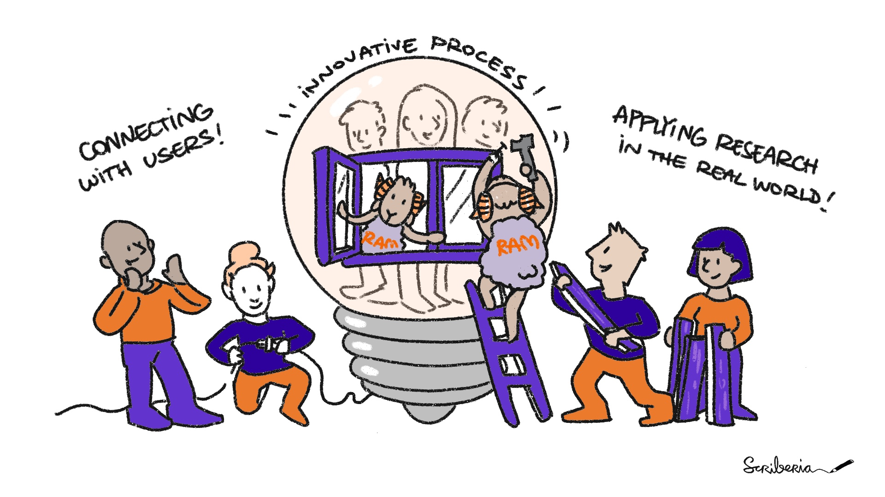

The Turing Way Community. This illustration is created by Scriberia with The Turing Way community, used under a CC-BY 4.0 licence. DOI: 10.5281/zenodo.3332807
The role of RSEs varies across Dutch institutions and projects. Some are deeply embedded in research teams, developing new software and advising researchers…
Others focus on support and training, guiding researchers on software best practices, including version control, testing, documentation, and FAIR principles.

Research engineer at FMG
RSE, data wrangler & research application manager?
This variety in roles reflects the diverse ways institutions have implemented RSE positions, tailored to their local research needs
(LCRDM report)
At SURF, we build tools that fit in the workflow of researchers. Our biggest challenge is finding out what researchers actually need and how they can use our tools in their work.
That’s the role of research engineers
1-1 meetings
Short-term projects: days/weeks
Long-term projects: infrastructure development
We act as a knowledge hub where expertise gained in temporary projects are safeguarded and used for cross-pollination across domains.
it [research software] contains the research process: data is collected, read, preprocessed, analyzed, visualized and simulated using research software
Free, publicly available source code is the infrastructure on which all of digital society relies. It is vital to the functioning of governments, private companies, and individual lives.
As the student begins assembling their resources for the assignment, they may not be able to conveniently locate the relevant information if it is spread across web-based organizational tools, a variety of personal computer locations and devices, and bookmarked web pages